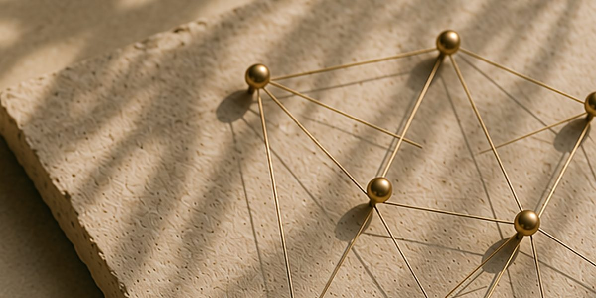

The Case for Fewer, Better Backlinks
Why a handful of credible backlinks builds more real authority than hundreds of low-quality links — and what a genuinely good backlink looks like.
It's a common enough question: why is a competitor with a third of your backlink count outranking you on almost every term that matters? The answer is usually simple. Most of those extra links weren't doing anything.
Backlink quality matters more than backlink quantity because search engines and AI systems weight links by the credibility of the source, not by how many exist — a hundred weak links can carry less influence than five from sites that are genuinely trusted in your space. That's not a new idea, exactly, but it's one a lot of link-building work still quietly ignores, and it's a big part of why we measure authority separately from rankings in the first place.
Why the old volume approach stopped working
For a long time, more links meant more authority, more or less regardless of where they came from. That's why link-building services built entire businesses around directories, guest post networks, and low-effort placements — the game was volume, and volume was cheap to produce.
Search engines caught up to that a while ago, and the AI systems now assembling answers seem to be even less patient with it. A link from a low-authority, low-relevance site tends to contribute little to a page's authority and can occasionally do more harm than good if the source looks manipulative or spammy. A backlink profile stuffed with irrelevant directory listings tends to hold a site back in a quiet way — not penalised exactly, just diluted, the genuinely good links buried in noise that makes them harder to weigh.
What a good backlink actually looks like
Not all links are trying to do the same job, which is part of why comparing raw counts is misleading in the first place. A strong backlink typically comes from a site that's topically relevant, has its own credibility in the space, and links to the content because it's genuinely useful — not because it was paid for or traded. A mention from a respected publication in your industry, a citation in someone else's well-researched article, a link from a site your own audience already trusts — these carry weight because they represent an actual judgment call by someone else that your content was worth pointing to.
That last part matters more than it sounds like it should. A link is, underneath the mechanics, a vote of confidence. Search engines built their systems around that idea decades ago because it's a genuinely good proxy for quality — assuming the vote is real.
Fewer links means less noise, not less effort
This isn't an argument for doing less. If anything, it's harder work. Earning one link from a site that actually matters usually takes real outreach, a piece of content worth linking to, or a relationship built over time. Buying fifty low-quality links takes an afternoon and a budget.
A smaller number of high-quality backlinks is easier to build a genuine authority signal around than a large number of low-quality ones, because each link is doing real work rather than adding to a pile that has to be sorted through. A shortlist of ten or fifteen realistic target sites, pursued properly, tends to move the needle faster than a much larger, noisier campaign — not because the total link count is higher, but because every link on the smaller list is actually contributing something.
What this means in practice
Quality-first link building tends to look less like outreach at scale and more like a small number of deliberate moves: identifying who in your space would genuinely benefit from citing your content, creating something worth that citation, and being patient about it. It's slower to report on in a monthly dashboard, which is probably why the volume approach hung on as long as it did — it's easier to show a chart going up than to explain why five good links matter more than two hundred forgettable ones.
But that's the trade we'd rather make. A handful of backlinks from sources that are actually respected does more for a site's real authority — and, increasingly, its chances of being the source an AI system decides to trust — than a long list of links nobody, human or machine, was ever going to weigh very heavily in the first place. The best of those links, more often than not, come from the same relationship-building work that earns a genuine press placement.
By RankForImpact
All insights
Ready to build authority that lasts?
Let’s grow your brand and create impact—together.